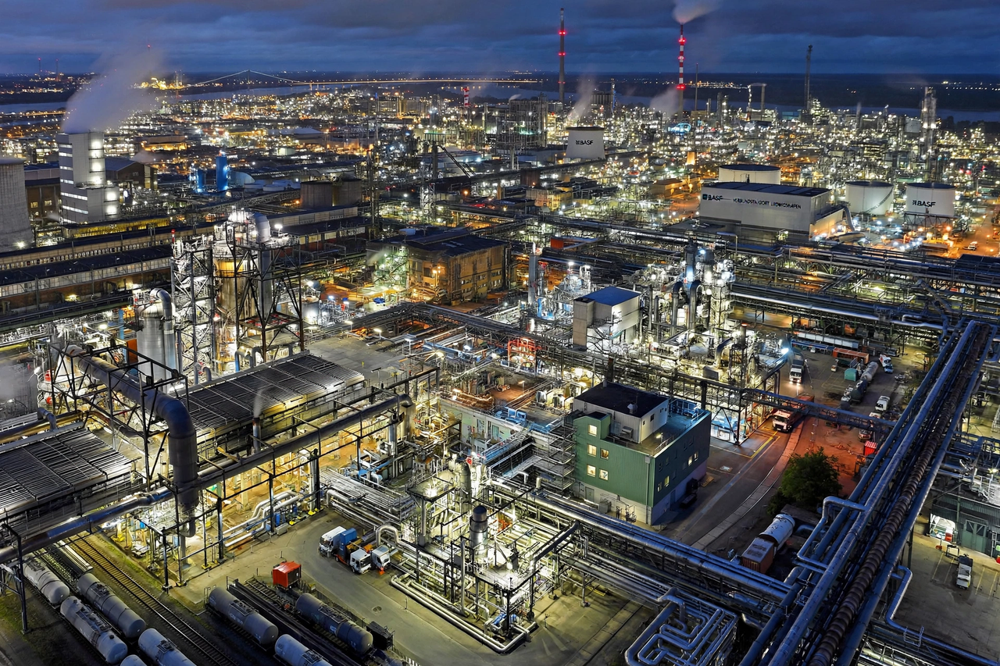

BASF
From Wikipedia, the free encyclopedia

BASF SE is a German multinational chemical company and the largest chemical producer in the world, headquartered in Ludwigshafen, where its integrated 'Verbund' site is the world's largest single chemical complex. Founded in 1865 as the Badische Anilin- und Sodafabrik, it built its name on synthetic dyes, produced ammonia by the Haber–Bosch process from 1913, was a core member of the IG Farben conglomerate (1925–1945), and today spans chemicals, materials, agriculture and nutrition with revenues around €65–70 billion.
History
BASF's dye chemistry grew from coal tar — indigo synthesis (1897) broke the natural-indigo trade — and its Oppau ammonia plant (the site of a catastrophic 1921 explosion that killed over 500) made fertiliser at scale. Within IG Farben, BASF's works were entangled in the Nazi war economy, including the Buna rubber plant at Auschwitz-Monowitz built with camp labour; post-war refounding (1952) restored it as an independent giant.
Modern company
The Verbund model — production chains sharing energy, by-products and infrastructure — is BASF's industrial signature, replicated at sites in Antwerp, Louisiana, Nanjing and (from 2022, amid energy-cost debate) Zhanjiang, China. Its portfolio includes plastics, catalysts, battery materials, crop protection (after acquiring Bayer's divested seed businesses in 2018) and the Wintershall Dea oil-and-gas legacy, while high European energy prices drive a contested strategic pivot toward Asia.